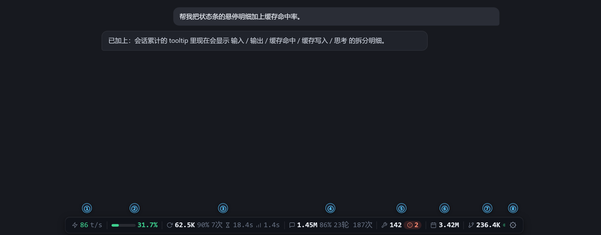

ZCode Token 用量状态栏 ·
功能导览
悬浮在 ZCode 对话窗口底部，实时显示本窗口的 token 用量与运行状态 —— 数据只读本地数据库，全程不联网。

条面显示项
条目默认全部显示，每项都可以在 ⚙ 设置里独立开关。
github.com/xhwxt/zcode-token-usage-statusbar
数据源：~/.zcode/cli/db/db.sqlite（只读）· Windows